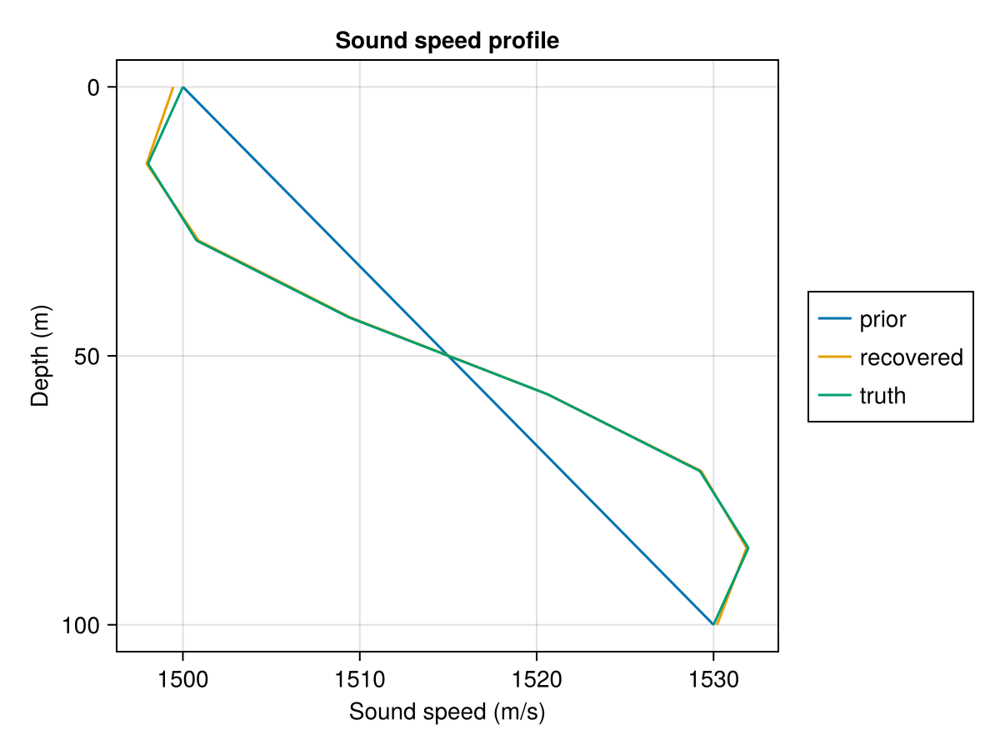
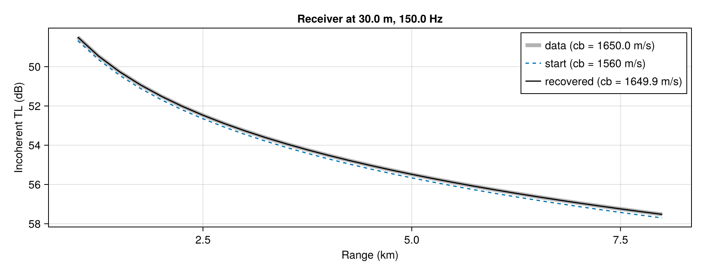

Automatic differentiation
Kraken.jl is differentiable end to end, in both modes. You can take the derivative of a wavenumber, of a mode shape, or of any scalar built from them, with respect to any environment parameter — sound speeds, densities, layer thicknesses, frequency.
Which mode you want depends on how many parameters you are differentiating with respect to:
| Cost | Use it for | |
|---|---|---|
| Forward (ForwardDiff.jl) | one solve per parameter | a handful of parameters — group speeds, a sensitivity to bottom speed |
| Reverse (Zygote.jl, Mooncake.jl) | a fixed multiple of one solve, independent of parameter count | many parameters — fitting a whole sound-speed profile |
Nothing needs to be enabled. Kraken.jl depends on ChainRulesCore.jl, which carries the reverse-mode rules; Zygote, ForwardDiff and Mooncake are yours to add.
Forward mode: group speeds
Group speed is the derivative of angular frequency $\omega = 2\pi f$ with respect to the horizontal wavenumber $k_{r,m}$, so it is a derivative with respect to a single parameter — forward mode's home ground.
using Kraken, ForwardDiff
function kr_vs_freq(freq)
env = UnderwaterEnv(pekeris_env()...)
props = AcousticProblemProperties(env, freq)
cache = AcousticProblemCache(env, props)
return find_kr(env, props, cache)
end
group_speeds = 2pi ./ ForwardDiff.derivative(kr_vs_freq, 100.0)These are checked against Fortran KRAKEN's own group-speed table on every push, to within 0.1%.
Reverse mode: many parameters at once
Reverse mode gives the gradient with respect to every input in one pass. The example below takes a 25-point sound-speed profile as the unknown and asks how the sum of the wavenumbers responds to each point of it:
using Kraken, Zygote, ForwardDiff, Printf
depth = 100.0
# Build an environment from an N-point sound-speed profile on a fixed depth grid.
function profile_env(cvec, z)
N = length(z)
# Columns are [z, cp, cs, ρ, αp, αs] — the KRAKEN .env SSP record layout.
ssp = hcat(z, cvec, zero(cvec), fill(1000.0, N), zero(cvec), zero(cvec))
layers = [0.0 0.0 depth]
sspHS = [
0.0 343.0 0.0 0.00121 0.0 0.0
depth 1600.0 0.0 1500.0 0.0 0.0
]
return UnderwaterEnv(ssp, layers, sspHS)
end
modal_sum(cvec, z; freq=100.0) = sum(kraken_jl(profile_env(cvec, z), freq).kr)
z = collect(range(0.0, depth, 25))
c = 1500.0 .+ 5 .* sin.(range(0, 3, 25))
g = Zygote.gradient(cc -> modal_sum(cc, z), c)[1]
@printf("largest sensitivity: %.3e at %.1f m\n", g[argmax(abs.(g))], z[argmax(abs.(g))])largest sensitivity: -6.811e-05 at 95.8 mz is constructed before the gradient is taken. It does not depend on the unknowns, and range is one of the few things reverse mode cannot trace — it stores its endpoints in an extended-precision form that has no derivative rule. collect it once, outside.
Forward mode agrees, which is how the rules are tested:
g_fwd = ForwardDiff.gradient(cc -> modal_sum(cc, z), c)
@printf("reverse vs forward: %.2e relative\n", maximum(abs.(g .- g_fwd) ./ max.(abs.(g_fwd), 1e-12)))reverse vs forward: 1.10e-11 relativeCost against parameter count
This is the whole reason reverse mode exists here. Timings below are from test/performance_tests.jl on a 2021 M1 laptop — differentiating the sum of the wavenumbers of a Pekeris-like waveguide at 100 Hz with respect to an N-point profile — N inputs and a single output, M = 1 (throughout, N counts inputs and M outputs). They use the single-mesh bisection/solve_for_kr path rather than kraken_jl, so the ratios isolate the cost of differentiation from the mesh-refinement loop:
N | primal | forward | reverse | forward / primal | reverse / primal |
|---|---|---|---|---|---|
| 1 | 0.081 ms | 0.092 ms | 0.431 ms | 1.1× | 5.3× |
| 5 | 0.063 ms | 0.164 ms | 0.410 ms | 2.6× | 6.5× |
| 10 | 0.067 ms | 0.346 ms | 0.403 ms | 5.2× | 6.0× |
| 50 | 0.066 ms | 1.689 ms | 0.381 ms | 25.7× | 5.8× |
| 100 | 0.082 ms | 3.86 ms | 0.463 ms | 47.3× | 5.7× |
| 500 | 0.079 ms | 20.0 ms | 0.424 ms | 253× | 5.4× |
(The test asserts the first four rows; the last two are the same benchmark run out further.)
Forward mode's multiple of the primal grows linearly with N, exactly as the theory says; reverse mode's sits flat at about 6×. The two cross near a dozen parameters, and past that the gap widens without limit — at N = 50 reverse mode is already 4.4× faster, at N = 500 it is 47× faster, and nothing about that trend turns around.
That 6× is not a floor on reverse mode's cost, it is a floor on reverse mode's overhead: Zygote spends about 0.3 ms building and replaying the tape whatever the problem is, and the 100 Hz Pekeris solve above is small enough (5 modes, 0.07 ms) that the overhead dominates the ratio. Hold the parameter count at 50 and make the physics bigger instead, and the multiple falls away:
| Frequency | Modes | primal | reverse | reverse / primal |
|---|---|---|---|---|
| 25 Hz | 1 | 0.008 ms | 0.349 ms | 46× |
| 50 Hz | 2 | 0.019 ms | 0.322 ms | 17× |
| 100 Hz | 5 | 0.064 ms | 0.431 ms | 6.7× |
| 200 Hz | 9 | 0.214 ms | 0.667 ms | 3.1× |
| 400 Hz | 18 | 0.835 ms | 1.60 ms | 1.9× |
So the rule of thumb is the usual reverse-mode one — a gradient costs a small multiple of a solve — and the multiple gets better, not worse, on the problems big enough for it to matter.
The benchmark runs as part of the optional performance suite and asserts the shape of this scaling, so a regression that reintroduced per-parameter cost fails CI:
KRAKEN_RUN_PERFORMANCE_TESTS=true julia --project=. -e 'using Pkg; Pkg.test()'Worked example: recovering a sound-speed profile
This is the use case the reverse-mode work exists for. We generate synthetic wavenumbers from a known profile, throw the profile away, and recover it from the wavenumbers alone by gradient descent.
The data are the lowest few modal wavenumbers at three frequencies — 14 numbers for 8 unknowns.
z_inv = collect(range(0.0, depth, 8))
# The profile we are pretending not to know: a linear trend with structure on top of it.
c_true = 1500.0 .+ 30.0 .* (z_inv ./ depth) .- 8.0 .* sin.(2π .* z_inv ./ depth)
freqs = (50.0, 100.0, 200.0)
nmodes = (2, 4, 8) # how many modes are "observed" at each frequency
model_kr(cvec, freq, nm) = kraken_jl(profile_env(cvec, z_inv), freq; abstol=1e-10, reltol=1e-10).kr[1:nm]
data = [model_kr(c_true, f, n) for (f, n) in zip(freqs, nmodes)]The misfit is the squared wavenumber residual. The 1e-12 divisor is cosmetic — it puts the loss in units of "how many parts in $10^{-6}$ of $k_r$ are we off by", which is easier to read than $10^{-8}$-sized numbers:
misfit(cvec) = sum(sum(abs2, model_kr(cvec, f, n) .- d) for (f, n, d) in zip(freqs, nmodes, data)) / 1e-12We start from a prior that has the linear trend right and misses the structure entirely — which is the realistic situation, since a climatological profile gets you the trend and nothing else. Adam is written out in full here rather than pulled from a package, because the point is that the only thing Kraken.jl supplies is Zygote.gradient(misfit, cvec):
c_prior = 1500.0 .+ 30.0 .* (z_inv ./ depth)
rmse(a, b) = sqrt(sum(abs2, a .- b) / length(a))
function invert(c0; iters=400, α=0.5, decay=0.995)
cvec = copy(c0)
m = zero(cvec)
v = zero(cvec)
history = NTuple{3,Float64}[]
for t in 1:iters
g = Zygote.gradient(misfit, cvec)[1] # <- one solve's worth of work, all 8 derivatives
m = 0.9 .* m .+ 0.1 .* g
v = 0.999 .* v .+ 0.001 .* g .^ 2
cvec = cvec .- (α * decay^t) .* (m ./ (1 - 0.9^t)) ./ (sqrt.(v ./ (1 - 0.999^t)) .+ 1e-12)
iszero(t % 100) && push!(history, (t, misfit(cvec), rmse(cvec, c_true)))
end
return cvec, history
end
c_hat, history = invert(c_prior)
@printf("%12s %14s %14s\n", "iteration", "misfit", "RMSE (m/s)")
@printf("%12d %14.3e %14.3f\n", 0, misfit(c_prior), rmse(c_prior, c_true))
for (t, L, e) in history
@printf("%12d %14.3e %14.3f\n", t, L, e)
end iteration misfit RMSE (m/s)
0 1.794e+07 5.292
100 5.526e+03 1.176
200 1.297e+03 0.564
300 4.465e+02 0.323
400 2.082e+02 0.217The misfit falls by five orders of magnitude and the profile error by a factor of ~25, from 5.3 m/s to about 0.2 m/s. Point by point:
@printf("%10s %12s %12s %12s\n", "depth (m)", "prior", "recovered", "truth")
for i in eachindex(z_inv)
@printf("%10.1f %12.2f %12.2f %12.2f\n", z_inv[i], c_prior[i], c_hat[i], c_true[i])
end depth (m) prior recovered truth
0.0 1500.00 1499.46 1500.00
14.3 1504.29 1497.95 1498.03
28.6 1508.57 1500.88 1500.77
42.9 1512.86 1509.47 1509.39
57.1 1517.14 1520.61 1520.61
71.4 1521.43 1529.30 1529.23
85.7 1525.71 1531.87 1531.97
100.0 1530.00 1530.20 1530.00Drawn with plot_ssp, the recovered profile lies on top of the truth, and the prior's missing structure is plain:
using CairoMakie
plot_ssp([
"prior" => profile_env(c_prior, z_inv),
"recovered" => profile_env(c_hat, z_inv),
"truth" => profile_env(c_true, z_inv),
])
Every iteration of that loop cost one gradient — and one gradient costs about what one forward solve costs, whether the profile has 8 points or 500. With forward mode the same loop would have cost 8 solves per iteration, and 500 solves per iteration for a finely sampled profile. That is the difference between an inversion you run and one you describe.
Modal inversion has local minima, and reverse-mode AD does not remove them. Starting the same loop from a flat 1500 m/s profile instead of the linear prior gets stuck about 18 m/s away from the truth with a misfit that has stopped falling. That is a property of the physics, not of the gradients: from a start within a few m/s of the truth the same optimizer converges to $10^{-3}$ m/s. Real inversions handle this with a decent prior, multiple restarts, or a global search on top — all of which are still cheaper with reverse-mode gradients driving them.
Worked example: a seabed sound speed from transmission loss
The inversion above fits wavenumbers, and no hydrophone measures a wavenumber. This one fits transmission loss, which is what a hydrophone does measure, and solves for the quantity a survey usually wants out of it: the sound speed of the seabed. Everything the field adds on top of the solver — the mode sum and the depth interpolation — is differentiated here, and none of it needed a rule of its own to be.
The water column is taken as known and the seabed sound speed is the unknown:
# The same environment as above, with the seabed sound speed opened up.
function seabed_env(cb, cvec, z)
n = length(z)
ssp = hcat(z, cvec, zero(cvec), fill(1000.0, n), zero(cvec), zero(cvec))
sspHS = [
0.0 343.0 0.0 0.00121 0.0 0.0
depth cb 0.0 1800.0 0.0 0.0
]
return UnderwaterEnv(ssp, [0.0 0.0 depth], sspHS)
endThe data are transmission loss on a 1–8 km track, at two receiver depths and two frequencies:
tl_ranges = collect(1_000.0:250.0:8_000.0)
tl_depths = [30.0, 70.0]
tl_freqs = (75.0, 150.0)
tl_nmodes = (2, 5)
cb_true = 1650.0
function tl_of(cb, freq, nmodes)
sol = kraken_jl(seabed_env(cb, c_true, z_inv), freq; abstol=1e-10, reltol=1e-10)
return transmission_loss(sol, tl_ranges, 25.0, tl_depths; nmodes, mode=:incoherent)
end
tl_data = [tl_of(cb_true, f, n) for (f, n) in zip(tl_freqs, tl_nmodes)]
tl_misfit(cb) = sum(sum(abs2, tl_of(cb, f, n) .- d) for (f, n, d) in zip(tl_freqs, tl_nmodes, tl_data))Two choices in there are the difference between an inversion and a random walk, and both are about keeping the misfit a function a gradient can descend.
A coherent mode sum has the interference nulls in it, and a null moves in range as cb changes, so the squared residual between two coherent TL curves is violently multimodal: scanned at 5 m/s over 1560–1760 m/s it shows eight local minima, 15 to 35 m/s apart, and its value at 1600 m/s (1205) is lower than at 1605 (1347) even though 1605 is closer to the truth. Gradient descent on that lands wherever it started. The incoherent sum has thrown the phase away, so what is left is the smooth mean level, and the misfit falls monotonically to zero from both sides. This is the same reason real matched-field work smooths or averages before it optimizes — it is not a limitation of the gradients.
The number of trapped modes is an integer function of cb: over the same span the 150 Hz solve goes from 5 modes to 10, one at a time. Each new mode arrives with a finite amount of energy, so a misfit summed over "however many modes there were" is a step function — it jumps by a factor of four at 1600→1605 m/s and again at 1675→1680. Summing a fixed number of modes is the derivative that is well defined, and it is the same integer-valued discontinuity already documented for the mesh schedule under Caveats.
With those settled, the misfit is a smooth bowl with its minimum at the truth:
@printf("%10s %14s\n", "cb (m/s)", "misfit")
for cb in 1560.0:25.0:1760.0
@printf("%10.0f %14.4f\n", cb, tl_misfit(cb))
end cb (m/s) misfit
1560 70.7844
1585 7.6585
1610 1.6293
1635 0.1328
1660 0.0490
1685 0.4601
1710 1.1161
1735 1.7526
1760 2.4069The optimizer is the same Adam, driven by the same one line of Kraken.jl:
function invert_cb(cb0; iters=200, α=3.0, decay=0.995)
cb = cb0
m = 0.0
v = 0.0
history = NTuple{3,Float64}[]
for t in 1:iters
g = Zygote.gradient(tl_misfit, cb)[1] # <- the whole of the Kraken.jl side
m = 0.9 * m + 0.1 * g
v = 0.9 * v + 0.1 * g^2 # β₂ = 0.9, not 0.999 — see below
cb -= (α * decay^t) * (m / (1 - 0.9^t)) / (sqrt(v / (1 - 0.9^t)) + 1e-12)
iszero(t % 50) && push!(history, (t, tl_misfit(cb), cb))
end
return cb, history
end
cb_hat, tl_history = invert_cb(1560.0)
@printf("%12s %14s %14s\n", "iteration", "misfit", "cb (m/s)")
@printf("%12d %14.3e %14.2f\n", 0, tl_misfit(1560.0), 1560.0)
for (t, L, cb) in tl_history
@printf("%12d %14.3e %14.2f\n", t, L, cb)
end
@printf("\ntruth %.1f m/s, recovered %.2f m/s, error %.2f m/s\n", cb_true, cb_hat, cb_hat - cb_true) iteration misfit cb (m/s)
0 7.078e+01 1560.00
50 9.925e-01 1616.55
100 1.027e-03 1648.35
150 3.476e-05 1650.25
200 3.113e-06 1649.92
truth 1650.0 m/s, recovered 1649.92 m/s, error -0.08 m/sThe fit, at the shallower receiver and 150 Hz. The starting guess is only about 0.2 dB off, consistently along the whole track. That small, systematic offset is what the inversion has to work with, and the recovered curve falls on the data:
fig = Figure(; size=(900, 350))
ax = Axis(fig[1, 1]; xlabel="Range (km)", ylabel="Incoherent TL (dB)", yreversed=true,
title="Receiver at $(tl_depths[1]) m, $(tl_freqs[2]) Hz")
plot_tl_range!(ax, tl_ranges, tl_data[2][1, :]; label="data (cb = $(cb_true) m/s)", linewidth=5, color=(:gray, 0.6))
plot_tl_range!(ax, tl_ranges, tl_of(1560.0, tl_freqs[2], tl_nmodes[2])[1, :]; label="start (cb = 1560 m/s)", linestyle=:dash)
plot_tl_range!(ax, tl_ranges, tl_of(cb_hat, tl_freqs[2], tl_nmodes[2])[1, :];
label=@sprintf("recovered (cb = %.1f m/s)", cb_hat), color=:black)
axislegend(ax; position=:rt)
fig
Ninety m/s of error in the starting guess comes back as a fraction of one. Starting from the other side converges harder still — 1750 m/s reaches 1650.0001 m/s, with the misfit down at $10^{-11}$.
The textbook $\beta_2 = 0.999$ does not work on this misfit, and the failure is quiet rather than loud. The gradient falls by about four orders of magnitude between the starting point and the minimum, and a second-moment memory a thousand steps long keeps the large early gradients in v long after they are gone — so m / √v collapses to a small fraction of 1 and the step size collapses with it. The search still descends monotonically, it just crawls: the same 200 iterations reach 1622 m/s instead of 1650. $\beta_2 = 0.9$ forgets fast enough to follow the gradient's own scale. Worth knowing generally, because any misfit built from a solver output spans decades like this one.
Open the water-column profile up as an unknown alongside cb — nine parameters instead of one, on the same data — and the optimizer drives the misfit from 143 down to $1.6\times10^{-8}$, a fit ten orders of magnitude better than anything above, while landing on cb = 1593 m/s and a profile whose RMS error is worse than the prior it started from (12.0 m/s against 5.3). It has not failed; it has found a genuinely different environment that reproduces the data to round-off. Adding a nine-depth vertical array and four frequencies narrows it but does not close it. That is non-uniqueness in the physics, and no amount of gradient accuracy touches it — it is what priors, regularization and joint inversion of independent data are for. The gradients make each attempt cheap; they do not make the problem well posed.
What actually carries the derivatives
The solver is not traced. Reverse mode enters through explicit rules attached at four seams, which is why the internals — in-place cache mutation, an argmax, a sign-fixing branch, an iterative refinement — never had to change:
| Seam | Rule |
|---|---|
solve_for_kr | Implicit function theorem on the Sturm-sequence determinant: $\partial k_r/\partial\theta = -D_\theta/D_{k_r}$ at the converged root |
inverse_iteration | Eigenvector adjoint, a bordered tridiagonal solve that projects out the $\psi$ direction. Linear in the mesh size, so a mode-shape gradient costs about what a wavenumber gradient costs |
soundspeed, density | Linear-interpolant adjoint over the values, the knots, and the query depth |
bisection | Non-differentiable: mode counting is integer-valued and piecewise constant, so it correctly contributes zero |
acoustic_field, transmission_loss, broadband_field | No rule. The field is arithmetic over the wavenumbers and mode shapes, so it is traced, and the cotangent reaches the rules above unchanged. Its depth interpolation is a dozen lines of linear weights rather than an interpolant object, which is what makes tracing it viable |
One consequence of the implicit-function rule is worth knowing: the wavenumber derivative does not depend on how hard the root solver worked. It differentiates the equation the root satisfies, not the arithmetic of the search. Forward mode gets the same rule from ext/KrakenForwardDiffExt.jl, which loads with ForwardDiff. After the plain solve, it takes one Newton step in Dual arithmetic, which sets the partials to $-D_\theta/D_{k_r}$ and leaves the value unchanged. Before that extension existed, ForwardDiff differentiated the search itself, and at 250 Hz it was over 1% from finite differences. Now the two modes agree to rounding.
Mooncake reaches the same rules through ext/KrakenMooncakeExt.jl, a package extension that loads only if you load Mooncake — it does not read ChainRulesCore rules directly, so the extension declares each one a Mooncake primitive.
Caveats
- The top-level gradient is conditional on the mesh schedule.
kraken_jlrefines the depth mesh until the wavenumbers converge, and how many levels that takes is an integer decision in the parameters. It is held fixed, which is the standard treatment, but it makes the gradient discontinuous at parameter values where the level count changes. Finite differences taken across such a point measure the jump rather than the slope — if you see AD and finite differences disagree on a thickness or a bottom speed, check whether the mesh moved.dont_break=truefixes the schedule by construction. - A field summed over "all" modes is a step function of the parameters. The number of trapped modes is an integer that changes as a parameter crosses a cutoff, and the mode arriving at that cutoff carries a finite amount of energy — so the field jumps, exactly as the mesh schedule does. Pass an explicit
nmodeswhen you differentiate a field, low enough that the solve returns at least that many everywhere the search goes. The worked example above measures the size of the jump it avoids. - Only the wavenumbers are Richardson-extrapolated; mode shapes come from the coarsest mesh. So a mode-shape gradient from
kraken_jlis the level-1 solve's. - Tighten the solver tolerance for top-level gradients.
kraken_jl's defaultabstol = reltol = 1e-6leaves ~1e-6 of truncation in the level-1 roots, and both AD modes then differentiate a slightly wrong root. This is the one place the implicit rule's tolerance independence does not save you, because the root it is evaluated at is itself a solver output. At1e-10the two modes agree to1e-10. - A lossy environment makes
krcomplex, which narrows what you may differentiate. The rule is the standard one: real parameters in, real loss out, complex only in between.sum(imag, sol.kr),sum(real, sol.kr)andsum(abs2, sol.kr)are all fine and every backend agrees on them. A complex-valued loss is not — Zygote raises"Output is complex, so the gradient is not defined."rather than silently picking a conjugation convention, which is correct: takereal,imagorabs2first. (ForwardDiff will happily hand back aComplexderivative for the same function, so the two backends disagree about whether the question is even well posed.) - Do not differentiate attenuation at $\alpha = 0$. $\mathrm{Im}(k_r)$ is identically zero below zero attenuation and linear above it, so that point is a kink with no two-sided derivative — and the two modes silently take opposite sides. ForwardDiff sees the perturbation through
is_lossyand returns the right-hand derivative; Zygote evaluatesis_lossyon the primal and returns the left-hand one, which is zero. One hair above zero they agree to $10^{-15}$. Differentiate at a nonzero attenuation, which is the only place the derivative means anything. - Reverse mode over a lossy environment means Zygote. Mooncake cannot trace the complex arithmetic that attenuation introduces and fails with
"It is not permissible to bitcast to a differentiable type during AD". The failing call is inside Mooncake's ownComplexsupport, so there is no rule Kraken.jl could add to fix it. Lossless solves are unaffected and both backends handle them.
Going further
examples/reverse_ad.jl in the repository is a runnable script covering all of the above in more depth, including the tolerance-independence demonstration, mode-shape functionals, and a case where the layer-thickness derivatives were validated against central differences of unmodified Fortran kraken.exe.
For the derivations themselves — where each rule comes from, why the Sturm rescaling cancels, why the eigenvector solve has to be projected, and what the dropped interpolant term actually costs — see docs/notebooks/implicit-differentiation.nb, a Wolfram notebook that derives each rule symbolically and checks it numerically against this implementation.